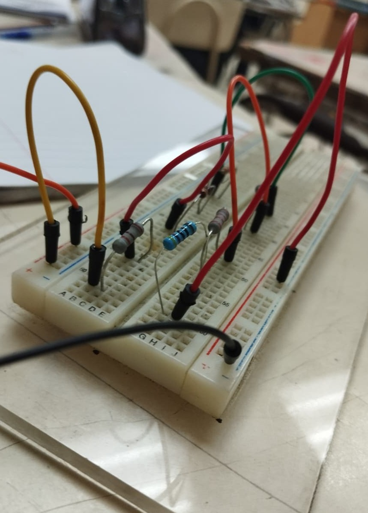

Introduccion
! Antes de Empezar
La formación integral de los estudiantes no se limita solo al conocimiento teórico; también incluye el desarrollo físico, académico y cultural. En nuestro instituto, todas estas actividades son pilares fundamentales que fomentan la disciplina, el trabajo en equipo y el amor por nuestras tradiciones.
Actividades Academicas
Nuestro instituto cuanta con diferentes actividas ha realizar entre ellas tenemos las actividades academicas en la cual se imparten y ejecutan diferentes acciones dentro de la institucion como: Actos Civicos, Modulos de Aprendizaje, Actividades Colaborativas, etc.
! En este espacio les detallaremos con mas precicion y claridad en que se basan todas y cada una de ellas.
Actos civicos
Realizados cada lunes de las semanas
Son ceremonias organizadas para fortalecer el sentido de pertenencia, el respeto a los símbolos patrios y los valores democráticos. En nuestro instituto se realizan todos los días lunes al inicio de la jornada escolar, como una tradición institucional.
Desarrollo de estos actos civicos !
El procedimiento es ordenado y respetuoso, siguiendo estos pasos principales:
1. Formación:
Los estudiantes y docentes se reúnen en el patio principal organizados por grados y carreras.
2. Entrada de Pabellon:
Se realiza con honores, marchando en orden mientras se interpreta música solemne.
3. Himno Nacional
Se canta con respeto y entonación correcta.
4. Juramento a la Bandera:
Se recita el compromiso de respetar y defender los símbolos y la soberanía de la nación.
5. Palabras alusivas
Un estudiante o docente comparte un mensaje sobre valores, fechas importantes o reflexiones para la semana.
6. Despedida
Se retira el pabellon y en este momento el director o subdirector comunica de forma breve y clara diferentes ambitos y obserbaciones de la institucion despues de eso se da inicio a las clases.
Inportancia
Estos actos enseñan a valorar nuestra historia, a respetar las leyes y a convivir en armonía. La bandera representa la unidad de todos los salvadoreños, por lo que su tratamiento es siempre digno.
Modulos inpartidos
Ya que es este instituto cuanta con diferentes modulos en los que inparte carreras en las que estan variadas por diferentes ambitos y cada uno son diferentes, todos estos estan para formar diferentes profecionales en el futuro, en este caso el instituto cuanta con diferentes Bachieratos en areas como: Administrativo Contable, Sistemas Electricos y Energuias Renovables, Desarrollo de Software, Salud y las Basicas que son Bachierato General. Todo esto va acompañado de las normativas institucionales trabajando en conjunto para una mejor formacion academica.

Modulos:
Sistemas electricos
Esta es una de las materias principales de la carrera técnica que cursamos. Su objetivo es brindar los conocimientos teóricos y prácticos necesarios para comprender, instalar, mantener y reparar sistemas eléctricos residenciales, comerciales e industriales, siempre bajo normas de seguridad.
Durante el estudio se abordan temas fundamentales:
Fundamentos de electricidad: Conceptos de voltaje, corriente, resistencia, potencia y ley de Ohm. - Circuitos eléctricos: Diseño, lectura de planos, conexión de conductores, interruptores y tomacorrientes. - Seguridad eléctrica: Uso correcto de herramientas, protección personal, normas de instalación y prevención de accidentes. - Instalaciones básicas: Montaje de tableros, conexión de lámparas, sistemas de puesta a tierra y protección contra sobrecargas. - Mantenimiento: Diagnóstico de fallas y reparación de equipos y redes eléctricas.
Aplicaciones
Lo aprendido en clase se complementa con talleres, donde los estudiantes ponen en práctica lo teórico, aprendiendo a manejar materiales y herramientas de forma responsable. Esta preparación nos permite estar listos para el mundo laboral.